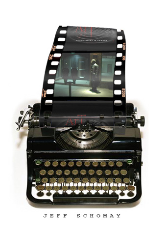
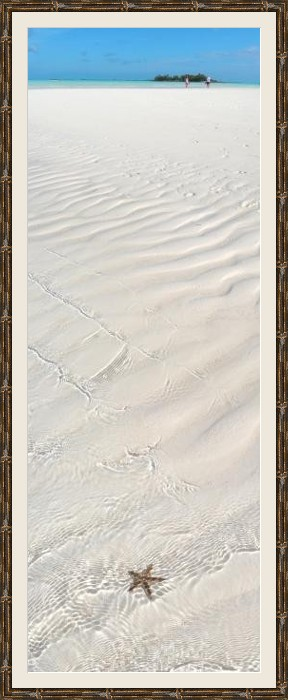

My Creative Side
Screenwriting. Game design. Visual Design. UX. Gamification. Photography. Creating with the intent to engage, inspire, & make an impact.
I've always been intrinsically creative. I use creativity to stand out. I use creativity to solve problems. I use creativity to make things more fun and more interesting.
Although creativity plays an important role in all of my endeavors, my main professional creative pursuit is screenwriting. I love bringing my ideas to life, and drawing others into my worlds. I have been studying and practicing the craft of screenwriting for many years, and I've developed a strong insight for crafting stories that resonate and entertain.
I have also recently taken a serious passion in the field of game development -- an arena where I play on both sides of the creative/technical fence. Creating a game that offers fun playability and a unique attraction is a challenge that requires tremendous creativity, knowledge of the field, and understanding of human psychology, but it is very rewarding.
One interesting aspect of having such a wide a range of interests, is that many of my disciplines overlap. This leads to unique situations to creativly use elements from one discipline in another. Another benefit is that I often have a unique perspective, and can pull back to see the "big picture" from a different angle.
I find my creativity comes in four main ways:

Inspiration. Experiencing other creative works, and constantly learning. I read a lot. The library is my friend. Often one sentence will spark an idea that has been hanging around beneath the surface for a while. Other times I'll get a glimpse of a new perspective and the inspiration hits all at once.
Travel. Getting out, moving, and being in nature always loosens up my mind. But actual traveling to new and interesting places always seems to fill my mind with all kinds of ideas that I can't wait to play with when I get back home.
Dreaming. Sometimes this means actual dreaming, but mostly it's day-dreaming. I spend a lot of time "staring into space." But inside, my mind is rapidly exploring complex worlds of branching possibilities. Something creative always falls out. The trick is keeping track of all the thoughts, and coercing them into something meaningful and worthwhile. This is where craft and flexibility comes in.
Intent. A lot of the time I just have to make myself be creative. I identify a problem that I need a creative solution to, and I just start attacking it from different angles, playing games of "what if," and let my mind follow each thread to see where it goes. Acknowledging that there is a creative solution out there makes it easier to work towards finding it.
A sample of my work
Feature-length Screenplays
-
"Nothing to Fear"
Horror. Currently looking for representation.
"Perception"
Noir. In progress."Still Life"
Psychological Drama/Mystery. In progress.
"Auction"
A poker-like card game where you trade cards to make the best hand by bidding on their speculative value.
Panoramic Photography
A collection of unique perspectives from my travels at home and abroad.
View galleryOriginal HTML5 mobile games currently in development
-
Tetris Death-trap
-
Source Hack
-
Scaffold Armageddon
Stay tuned for more details as I finish these games.
My Technical Side
JavaScript. CoffeeScript. Node. HTML5. Mobile. Apps. Games.
I love programming. I love having the power to create at my fingertips. The challenge of making everything fit together elegantly. But most of all, I love being able to create something fun and interesting, and turn a creative idea into an engaging interactive experience.
My focus is on game development, especially for mobile. I've been inspired by the seemingly magic art of making a simple mechanic so incredibly fun and addicting through good game design. As a screenwriter, I'm lured by the open opportunities to use stories and create worlds in new ways.
I have always been amazed with computer programmers, and I've often flirted with coding -- from writing simple text-based adventure games in BASIC on my cassette-tape-driven TRS-80, to dabbling with C++ and OpenGL in college, to working as a full time web developer.
But it's only been in the last few years, that I've really considered myself a true hacker. Since then I've learned so much about writing good, clean code, and the learning hasn't slowed down yet. I can't stop thinking about code.
Of course, my more visual "right-brain" side hasn't gone away, and I find myself in a very awesome position at the crossroads of technical coding and visual/conceptual design. This unique position is what differentiates and defines me.
Technical Projects
A sample of what I'm working on:
Games currently in development
-
Auction (card game)
-
Tetris Death-trap
-
Source Hack
-
Scaffold Armageddon
More details, links to play, screenshots, etc. will come...
Argus mobile app
A simple business app for Argus Self-Storage. Native feel version of their website, built with Sencha Touch. Syncs wth their main database.
View app
(Intended for phone)